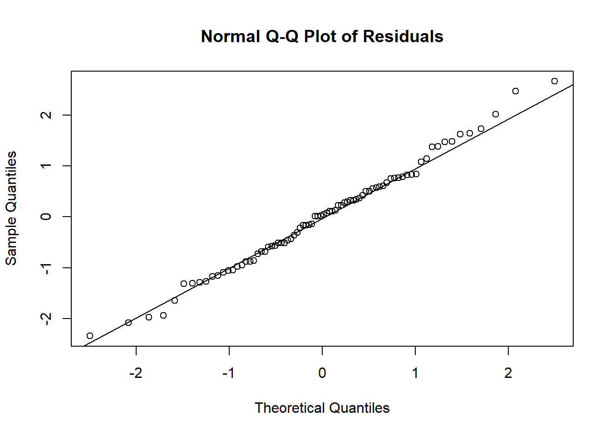
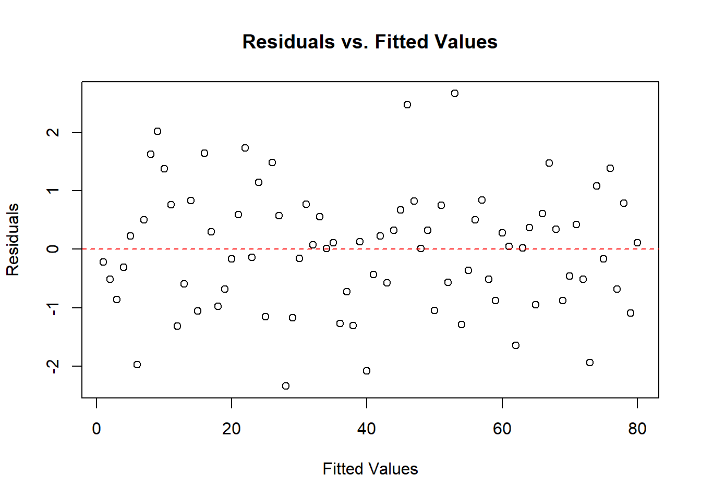
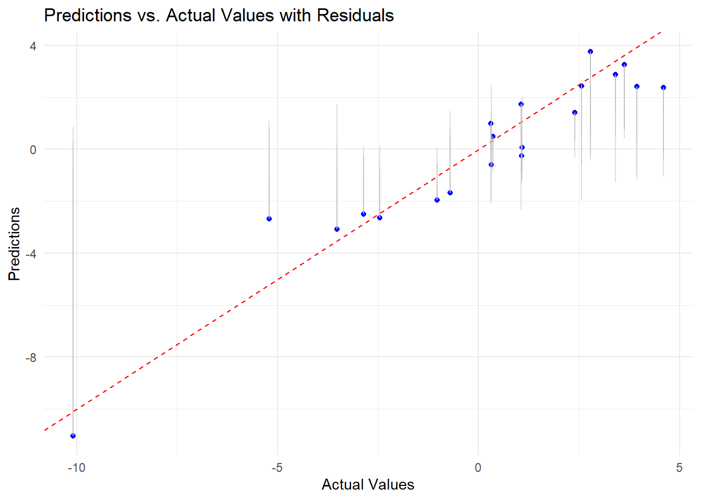
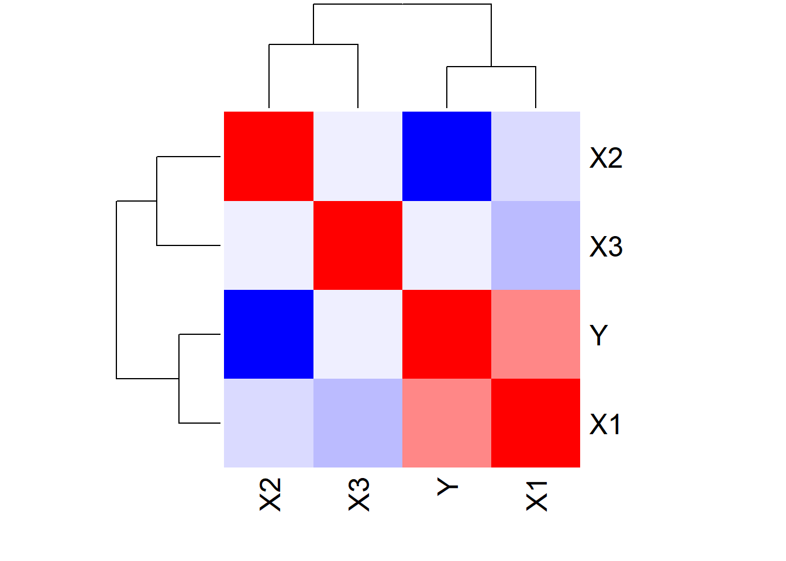

The following objects are masked from 'package:stats':
filter, lag
The following objects are masked from 'package:base':
intersect, setdiff, setequal, union
library(ggplot2)library(caret)
Loading required package: lattice
library(plotly)
Attaching package: 'plotly'
The following object is masked from 'package:ggplot2':
last_plot
The following object is masked from 'package:stats':
filter
The following object is masked from 'package:graphics':
layout
# Set seed for reproducibilityset.seed(123)# Generate a random dataframen <-100random_df <-data.frame(X1 =rnorm(n),X2 =rnorm(n),X3 =rnorm(n))# Add the Y column based on X1, X2, and X3random_df$Y <-2* random_df$X1 -3* random_df$X2 +0.5* random_df$X3 +rnorm(n)# Display the first few rows of the dataframeprint("Random Dataframe:")
# Linear Regression Machine Learning# Split data into training and testing setsset.seed(456)train_index <-createDataPartition(random_df$Y, p =0.8, list =FALSE)train_data <- random_df[train_index, ]test_data <- random_df[-train_index, ]# Fit a linear regression modellm_model <-lm(Y ~ ., data = train_data)# Display the summary of the linear regression modelprint("Linear Regression Model Summary:")
[1] "Linear Regression Model Summary:"
print(summary(lm_model))
Call:
lm(formula = Y ~ ., data = train_data)
Residuals:
Min 1Q Median 3Q Max
-2.34439 -0.69371 0.03461 0.62794 2.66797
Coefficients:
Estimate Std. Error t value Pr(>|t|)
(Intercept) -0.07543 0.12207 -0.618 0.53847
X1 2.07202 0.12921 16.036 < 2e-16 ***
X2 -2.87535 0.12951 -22.202 < 2e-16 ***
X3 0.36562 0.12312 2.970 0.00399 **
---
Signif. codes: 0 '***' 0.001 '**' 0.01 '*' 0.05 '.' 0.1 ' ' 1
Residual standard error: 1.06 on 76 degrees of freedom
Multiple R-squared: 0.9162, Adjusted R-squared: 0.9129
F-statistic: 277.1 on 3 and 76 DF, p-value: < 2.2e-16
# Make predictions on the test setpredictions <-predict(lm_model, newdata = test_data)# Evaluate the modelprint("Model Evaluation:")
[1] "Model Evaluation:"
# Calculate various forms of accuracy metricsrmse <-sqrt(mean((predictions - test_data$Y)^2))mae <-mean(abs(predictions - test_data$Y))r_squared <-cor(predictions, test_data$Y)^2print(paste("Root Mean Squared Error (RMSE):", round(rmse, 3)))
# Interactive Visualization using plotlyplot_ly(data = test_data, x =~test_data$Y, y =~predictions, type ='scatter', mode ='markers') %>%add_trace(x =c(min(test_data$Y), max(test_data$Y)), y =c(min(test_data$Y), max(test_data$Y)), mode ='lines', line =list(color ='red', dash ='dash')) %>%layout(title ="Interactive Predictions vs. Actual Values", xaxis =list(title ="Actual Values"), yaxis =list(title ="Predictions"))
# Residual Analysisprint("Residual Analysis:")
[1] "Residual Analysis:"
residuals <-residuals(lm_model)qqnorm(residuals, main ="Normal Q-Q Plot of Residuals")qqline(residuals)

plot(residuals, main ="Residuals vs. Fitted Values", xlab ="Fitted Values", ylab ="Residuals")abline(h =0, col ="red", lty =2)

# Visualize the predictions vs. actual values using ggplot2 (with residuals)residual_data <-data.frame(Actual = test_data$Y, Predicted = predictions, Residual = residuals)
Warning in data.frame(Actual = test_data$Y, Predicted = predictions, Residual =
residuals): row names were found from a short variable and have been discarded
ggplot(residual_data) +geom_point(aes(x = Actual, y = Predicted), color ="blue") +geom_abline(intercept =0, slope =1, linetype ="dashed", color ="red") +labs(title ="Predictions vs. Actual Values with Residuals", x ="Actual Values", y ="Predictions") +geom_segment(aes(x = Actual, y = Predicted, xend = Actual, yend = Residual), color ="gray", alpha =0.5) +theme_minimal()

# Interactive 3D Visualization using plotlyprint("Interactive 3D Visualization:")
[1] "Interactive 3D Visualization:"
plot_ly(data = random_df,x =~X1, y =~X2, z =~X3,type ='scatter3d',mode ='markers',marker =list(size =5, color ='blue')) %>%layout(title ="Interactive 3D Scatterplot", scene =list(xaxis =list(title ="X1"), yaxis =list(title ="X2"), zaxis =list(title ="X3")))
heatmap(cor_matrix, col =colorRampPalette(c("blue", "white", "red"))(50), symm =TRUE)

Conclusion
The linear regression model exhibits strong performance as indicated by various metrics. The model captures a substantial portion of the variance in the data, with an R-squared value of 0.91, suggesting that approximately 91% of the variability in the response variable is explained by the predictors. The coefficients of the predictors (X1, X2, and X3) are statistically significant, and their estimated values align with the expected relationships. In terms of accuracy metrics, the model demonstrates a Root Mean Squared Error (RMSE) of 1.088, implying that, on average, predictions deviate by approximately 1.088 units from the actual values. The Mean Absolute Error (MAE) is 0.892, representing the average absolute difference between predicted and actual values. Additionally, the Mean Squared Error (MSE) is 1.184, providing another perspective on the model’s predictive accuracy. It’s noteworthy that the Residual Standard Error is 1.06, and the F-statistic is 277.1 with a very low p-value, indicating the overall significance of the model. These collectively suggest that the model fits the data well, and its predictions align closely with the observed values.